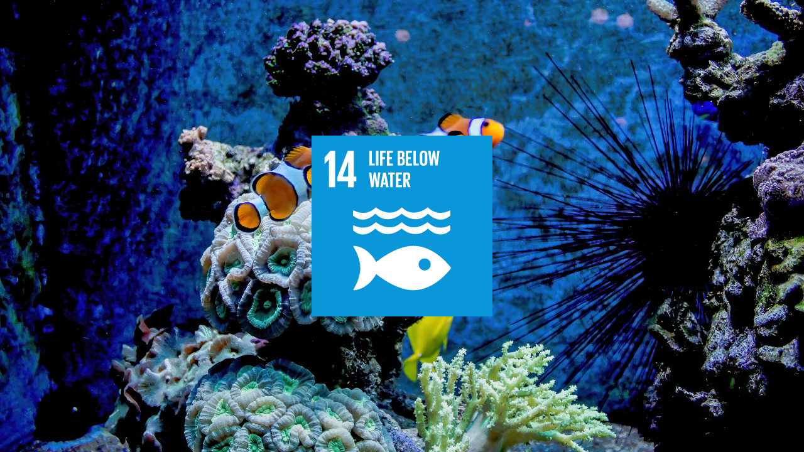

Conserve and sustainably use the oceans, seas
and marine resources for
sustainable development
Discover More
"Sustainable Development Goal 14, titled 'Life Below Water,' focuses on conserving and sustainably utilizing the oceans, seas, and marine resources for sustainable development. Below are some key points and objectives of SDG 14:
1. Conservation of Marine Ecosystems: Protecting and restoring marine and coastal ecosystems, including coral reefs, mangroves, and seagrass beds, to support biodiversity and ecosystem services.
2. Sustainable Fisheries Management: Implementing science-based management plans to ensure the sustainable exploitation of fish stocks, reduce overfishing, and eliminate illegal, unreported, and unregulated (IUU) fishing practices.
3. Marine Pollution Reduction: Preventing and significantly reducing marine pollution from land-based sources, including plastic debris, nutrient runoff, and hazardous chemicals, to improve marine health and ecosystem resilience.
This is the mission of our website...